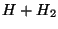
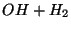
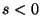
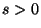

NWChem has interfaces to several different packages which are listed below. In general, the NWChem authors work with the authors of the other packages to make sure that the interface works. However, any problems with the interface should be reported to the nwchem-users@emsl.pnl.gov e-mail list.
NBO
...
END
This directive is used to run the NBO package within NWChem. (To only print out an input file for NBO, see Section 28.1.1.) The current version of NBO in NWChem is version 5.0.
Inside the NBO block are the typical commands that would be needed for NBO (Please see an NBO user's manual for more information.). The following directive is needed to execute NBO.
task nboAs an example:
title "Methylamine...rhf/3-21g//Pople-Gordon standard geometry" start methylamine echo memory 8 mw basis C library 3-21g N library 3-21g H library 3-21g end geometry C .052902 .711852 .000000 N .052902 -.758148 .000000 H -.974760 1.075185 .000000 H .566733 1.075185 .889981 H .566733 1.075185 -.889981 H -.423217 -1.094815 .824662 H -.423217 -1.094815 -.824662 symmetry c1 end task SCF energy nbo $nbo cmo $end end task nbo
by Bruce C. Garrett,
Environmental Molecular Sciences Laboratory,
Pacific Northwest Laboratory, Richland, Washington
Yao-Yuan Chuang and Donald G. Truhlar,
Department of Chemistry and Super Computer Institute,
University of Minnesota, MN 55455-0431
and interfaced to NWChem by
Ricky A. Kendall,
Scalable Computing Laboratory,
Ames Laboratory and Iowa State University, Ames, IA 50011
Theresa L. Windus,
Environmental Molecular Sciences Laboratory,
Pacific Northwest Laboratory, Richland, Washington
If you use the DIRDYVTST portion of NWChem, please use following citation in addition to the usual NWChem citation from Section 1:
DIRDYVTST, Yao-Yuan Chuang and Donald G. Truhlar, Department of Chemistry and Super Computer Institute, University of Minnesota; Ricky A. Kendall,Scalable Computing Laboratory, Ames Laboratory and Iowa State University; Bruce C. Garrett and Theresa L. Windus, Environmental Molecular Sciences Laboratory, Pacific Northwest Laboratory.
By using DIRDYVTST, a user can carry out electronic structure calculations
with NWChem and use the resulting energies, gradients, and Hessians for
direct dynamics calculations with POLYRATE.
This program prepares the file30 input for POLYRATE
from NWChem
electronic structure calculations of energies, gradients and Hessians at the
reactant, product, and saddle point geometries and along the minimum
energy path. Cartesian geometries for the reactants, products, and
saddle points need to be input to this program; optimization of
geometries is not performed in this program. Note that DIRDYVTST is
based on the DIRDYGAUSS program
and is similar to two other programs: DDUTILITIES
and GAUSSRATE. Users of this module are
encouraged to read the
POLYRATE
manual since they will need to
create the file fu5 input to run calculations with POLYRATE.
Notes about the code:
Input. The code has been written to parallel, as much as possible,
the POLYRATE code.
Output. There is one default output file for each DIRDYVTST run - .file30.
Integrators for following the reaction path. Currently the Euler and three Page-McIver (PM) methods are implemented. The PM methods are the local quadratic approximation (LQA), the corrected LQA (CLQA), and the cubic (CUBE) algorithm. The PM methods are implemented so that the Hessian can be reused at intermediate steps at which only the gradient is updated.
Test runs are located in directories in $NWCHEM_TOP/QA/tests. Test
runs are available for two systems:  and .
The test uses the Euler integration method at the SCF/3-21G level
of theory to calculate points along the reaction path.
This test is located in the $NWCHEM_TOP/QA/tests/h3tr1 directory.
The test uses the Page-McIver CUBE algorithm to calculate points
on the SCF/3-21G surface and does additional single point calculations at
the SCF/6-31G* level of theory. This test is located in the
$NWCHEM_TOP/QA/tests/oh3tr3 directory.
Note: These tests are set up with SCF, however, other levels of theory can be used. The initial hessian calculations at the reactants, products and saddle point can cause some problems when numerical hessians are required (especially when there is symmetry breaking in the wavefunction).
The input consists of keywords for NWChem and keywords related to POLYRATE
input. The first set of inputs are for NWChem with the general input block
of the form:
DIRDYVTST [autosym [real tol default 1d-2] | noautosym]
[THEORY <string theory> [basis <string basis default "ao basis">] \
[ecp <string ecp>] [input <string input>]]
[SPTHEORY <string theory> [basis <string basis default "ao basis">] \
[ecp <string ecp>] [input <string input>]]
...
END
autosym | noautosym which is used as described in the geometry
directive (see Section 6).
Autosym is on by default. A couple words of warning here.
The tolerance related to autosym can cause problems when taking the
initial step off of the transition state. If the tolerance is too large and
the initial step relatively small,
the resulting geometry will be close to a higher symmetry than is really
wanted and the molecule will be symmetrized into the higher symmetry.
To check this, the code prints out the symmetry at each geometry along the
path. It is up to the user to check the symmetry and make sure that
it is the required one. In preverse cases, the user may need to turn
autosym off (noautosym) if changing the tolerance doesn't
produce the desired results. In the case that autosym is used, the
user does not need to worry about the different alignment of the molecule
between NWChem and POLYRATE, this is taken care of internally in the
DIRDYVTST module.
"ao basis".
DIRDYVTST input then this will be
used in all calculations. If an alternative ECP name (the name
specified on the ECP directive in the same manner as done for basis
sets) is specified on one of the theory directives, then this ECP will
be used in preference for that level of theory.
For many purposes, the ability to specify the theory, basis and
effective core potential is adequate. All of the options for each
theory are determined from their independent input blocks. However,
if the same theory (e.g., DFT) is to be used with different options
for theory and sptheory, then the general input strings must
be used. These strings are processed as NWChem input each time the
theoretical calculation is invoked. The strings may contain any NWChem
input, except for options pertaining to DIRDYVTST and the task directive.
The intent is that the strings be used just to control the options
pertaining to the theory being used.
A word of caution. Be sure to check that the options are producing the desired results. Since the NWChem database is persistent, the input strings should fully define the calculation you wish to have happen.
For instance, if the theory model is DFT/LDA/3-21g and the
sptheory model is DFT/B3LYP/6-311g**, the DIRDYVTST input might look like this
dirdyvtst
theory dft basis 3-21g input "dft\; xc\; end"
sptheory dft basis 6-311g** input "dft\; xc b3lyp\; end"
....
end
The empty XC directive restores the default LDA
exchange-correlation option (see Section 11.3). Note that
semi-colons and other quotation marks inside the input string must be
preceded by a backslash to avoid special interpretation.
These keyword options are simlar to the POLYRATE input format, except there
are no ENERGETICS, OPTIMIZATION, SECOND, TUNNELING, and RATE sections.
The GENERAL section has the following format:
*GENERAL
[TITLE <string title>]
ATOMS
<integer num> <string tag> [<real mass>]
...
END
[SINGLEPOINT]
[SAVEFILE (vecs || hess || spc)
Descriptions
TITLE is a keyword that allows the user to input a description of the calculation. In this version, the user can only have a single-line description.
For example: TITLE Calculation of D + HCl reaction
ATOMS is a list keyword that is used to input a list of
the atoms. It is similar to POLYRATE in that the order of the
atom and the atomic symbol are required in a single line. If
isotope of the element is considered then the atomic mass is
required in units of amu.
For example:
ATOMS
1 H 2.014
2 H
3 Cl
END
SINGLEPOINT is a keyword that specifies that a single
point calculation is to be performed at the reactants,
products and saddle point geometries. The type of
single point calculation is specified in the sptheory
line.
SAVEFILE is a keyword that specifies that NWChem files are to be saved. Allowed values of variable input to SAVEFILE are vecs, hess, and spc for saving the files base theory movecs, base theory hessian and singlepoint calculation movecs.
These sections have the following format:
*(REACT1 || REACT2 || PROD1 || PROD2 || START)
GEOM
<integer num> <real x y z>
...
END
SPECIES (ATOMIC || LINRP || NONLINRP || LINTS || NONLINTS default NONLINRP)
REACT1 and REACT2 are input for each of the reactants and PROD1 and PROD2 are input for each of the products. REACT1 and PROD1 are required. START is the input for the transition state if one exists, or starting point to follow downhill the MEP.
Descriptions
GEOM is a list keyword that indicates the geometry of the molecule in Cartesian coordinates with atomic unit.
For example:
GEOM
1 0.0 0.0 0.0
2 0.0 0.0 1.5
END
SPECIES is a variable keyword that indicates the type of the molecule. Options are: ATOMIC (atomic reactant or product), LINRP (linear reactant or product), NONLINRP (nonlinear reactant or product), LINTS (linear transition state), and NONLINTS (nonlinear transition state).
For example: SPECIES atomic
The Path section has the format:
*PATH [SCALEMASS <real scalemass default 1.0>] [SSTEP <real sstep default 0.01>] [SSAVE <real ssave default 0.1>] [SHESS <real shess default SSAVE>] [SLP <real slp default 1.0>] [SLM <real slm default -1.0>] [SIGN (REACTANT || PRODUCT default REACTANT)] [INTEGRA (EULER || LQA || CLQA || CUBE default EULER)] [PRINTFREQ (on || off default off)]
Descriptions
SCALEMASS is a variable keyword that indicates the arbitrary mass (in amu) used for mass-scaled Cartesian coordinates. This is the variable called mu in published papers. Normally, this is taken as either 1.0 amu or, for bimolecular reactions, as the reduced mass of relative translation of the reactants.
SSTEP is a variable keyword that indicates the numerical step size (in bohrs) for the gradient grid. This is the step size for following the minimum energy path.
SSAVE is a variable keyword that indicates the numerical step size (in bohrs) for saving the Hessian grid. At each save point the potential and its first and second derivatives are recalculated and written to the .file30 file. For example, if SSTEP=0.01 and SSAVE=0.1, then the potential information is written to .file30 every 10 steps along the gradient grid.
SHESS is a variable keyword that indicates the numerical step size (in bohrs) for recomputing the Hessian when using a Page-McIver integrator (e.g., LQA, CLQA, or CUBE). For Euler integration SHESS = SSAVE. For intermediate points along the gradient grid, the Hessian matrix from the last Hessian calculation is reused. For example, if SSTEP=0.01 and SHESS=0.05, then the Hessian matrix is recomputed every 5 steps along the gradient grid.
SLP is a variable keyword that indicates the positive limit of the reaction coordinate (in bohrs).
SLM is a variable keyword that indicates the negative limit of the reaction coordinate (in bohrs).
SIGN is a variable keyword used to ensure the conventional definition
of the sign of s,  for the reactant side and
 for the product side, is followed. PRODUCT
should be used if the eigenvector at the saddle point points
toward the product side and REACTANT if the
eigenvector points toward the reactant side.
INTEGRA is a variable keyword that indicates the integration method used to follow the reaction path. Options are: EULER, LQA, CLQA, and CUBE.
PRINTFREQ is a variable keyword that indicates that projected frequencies and eigenvectors will be printed along the MEP.
DIRDYVTST calculations should be restarted through the normal NWChem
mechanism (See Section 5.1). The user needs to change the
start directive to a restart directive and get rid of any
information that will overwrite important information in the RTDB. The
file.db and file.file30 need to be available for the
calculation to restart properly.
This is an example that creates the file30 file for POLYRATE for . Note that the multiplicity is that of the entire supermolecule, a doublet. In this example, the initial energies, gradients, and Hessians are calculated at the UHF/3-21G level of theory and the singlepoint calculations are calculated at the MP2/cc-pVDZ level of theory with a tighter convergence threshold than the first SCF.
start h3test
basis
h library 3-21G
end
basis singlepoint
h library cc-pVDZ
end
scf
uhf
doublet
thresh 1.0e-6
end
dirdyvtst autosym 0.001
theory scf input "scf; uhf; doublet; thresh 1.0e-06; end"
sptheory mp2 basis singlepoint input \
"scf; uhf; doublet; thresh 1.0e-07; end"
*GENERAL
TITLE
Test run: H+H2 reaction, Page-McIver CLQA algorithm, no restart
ATOMS
1 H
2 H
3 H
END
SINGLEPOINT
*REACT1
GEOM
1 0.0 0.0 0.0
2 0.0 0.0 1.3886144
END
SPECIES LINRP
*REACT2
GEOM
3 0.0 0.0 190.3612132
END
SPECIES ATOMIC
*PROD2
GEOM
1 0.0 0.0 190.3612132
END
SPECIES ATOMIC
*PROD1
GEOM
2 0.0 0.0 1.3886144
3 0.0 0.0 0.0
END
SPECIES LINRP
*START
GEOM
1 0.0 0.0 -1.76531973
2 0.0 0.0 0.0
3 0.0 0.0 1.76531973
END
SPECIES LINTS
*PATH
SSTEP 0.05
SSAVE 0.05
SLP 0.50
SLM -0.50
SCALEMASS 0.6718993
INTEGRA CLQA
end
task dirdyvtst